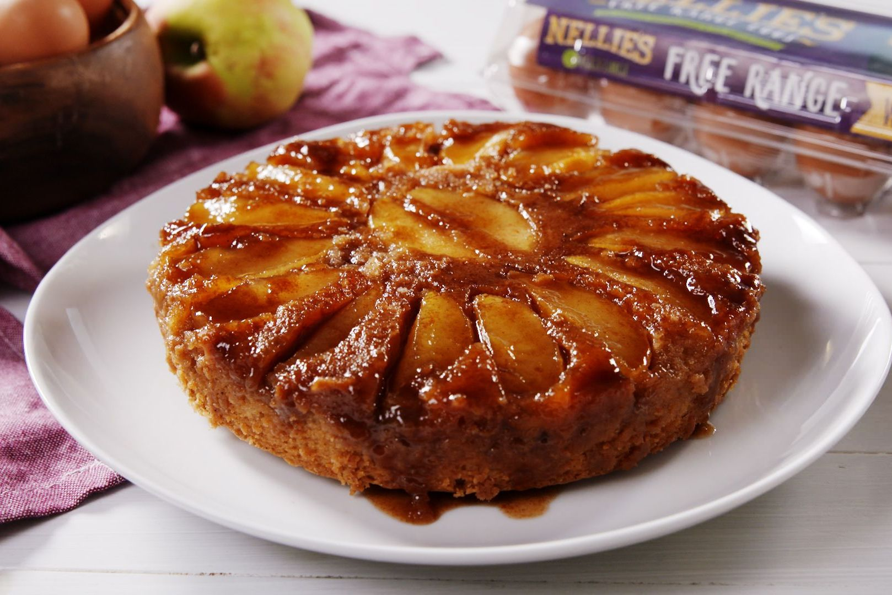

Ingredientes para a massa:
- 3 maçãs (cascas batidas, polpa picada)
- 3 ovos
- 1/2 xícara de óleo
- 2 xícaras de farinha
- 1 colher (sopa) de canela
- 1 colher (sopa) de fermento
Bata no liquidificador o óleo, ovos e as cascas da maçã. Misture com os secos e os pedaços da fruta.